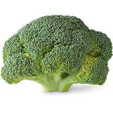

This is my first ever HTML Page. I have no experience in HTML but it seems straightforward. My name is Mason Rocco, and I am a second year student at The Ohio State University. I am studying Data Analytics and am very excited to see what the rest of this course holds for me. The list below shows a few of the classes I am currently taking.
The table below shows some of my favorite fruits and vegetables
| Fruits | Vegetables |
| Apple | Carrot |
| Banana | Broccoli |
This is a picture of broccoli, my favorite vegetable.

This link will take you to YouTube, one of my favorite websites: YouTube